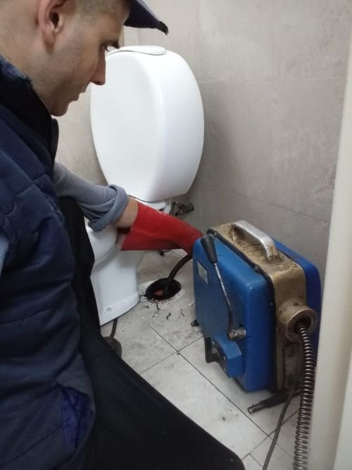
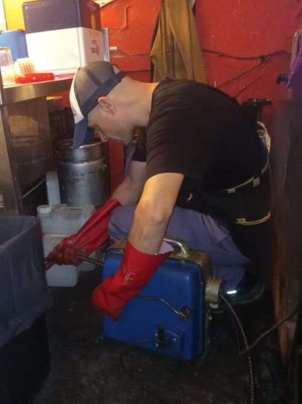
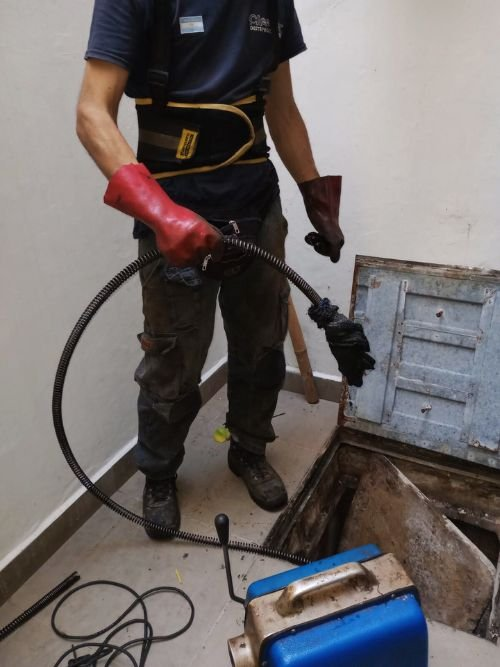
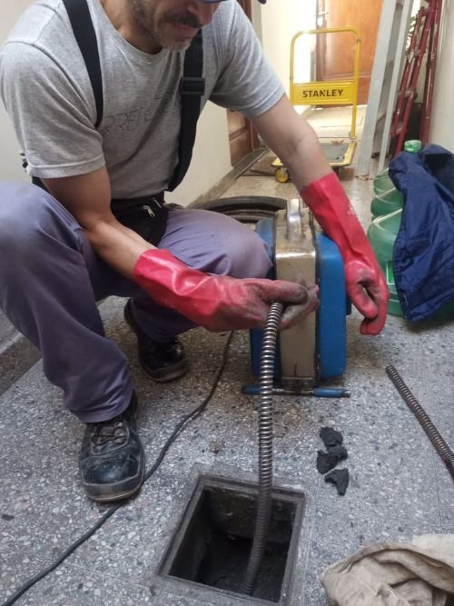
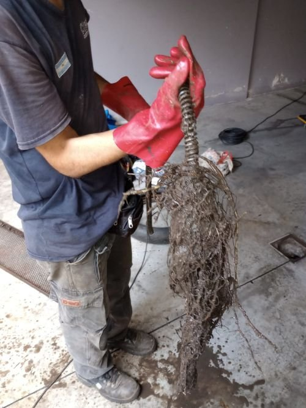

Destapaciones de baños e inodoros
Cuando el inodoro, la rejilla o la ducha no desagotan, intervenimos con máquina para liberar la obstrucción y recuperar el uso normal del baño.
Pedir presupuestoServicio de urgencias 24 horas en CABA
¿Tenés una cañería, cloaca o desagüe obstruido? Llegamos con equipamiento profesional para resolver el problema de forma rápida, prolija y segura.
Presupuesto sin cargo · Atención todos los días · Consultá disponibilidad
Soluciones para cada obstrucción
Atendemos emergencias y trabajos programados con máquina profesional. Evaluamos el origen de la obstrucción y trabajamos sobre la cañería sin demoras innecesarias.

Cuando el inodoro, la rejilla o la ducha no desagotan, intervenimos con máquina para liberar la obstrucción y recuperar el uso normal del baño.
Pedir presupuesto
Resolvemos obstrucciones en bachas, piletas y lavaderos producidas por grasa, residuos o acumulación en la cañería.
Pedir presupuesto
Localizamos y liberamos obstrucciones en cámaras de inspección, columnas y tramos generales de edificios, consorcios y viviendas.
Consultar ahora
Despejamos desagües de patios, terrazas y balcones para ayudar a evitar acumulación de agua y filtraciones durante las lluvias.
Consultar por pluviales
Atendemos locales, comercios, negocios, hoteles y establecimientos gastronómicos donde una obstrucción puede interrumpir la actividad.
Coordinar visitaSolucionamos problemas de caños, cloacas y pluviales para empresas, industrias y administraciones de consorcios.
Consultar soluciónMenos incertidumbre, más solución
Cuando hay una obstrucción, necesitás saber qué hacer y cuánto puede demorar. Por eso concentramos la atención en canales directos y explicamos cada paso antes de comenzar.
Hablar con un especialista →Por teléfono o WhatsApp, indicá dónde está el problema y desde cuándo.
Analizamos la situación y coordinamos el servicio en CABA.
Intervenimos con equipamiento profesional y cuidamos el espacio de trabajo.
Equipamiento profesional
Utilizamos una máquina profesional con flejes de acero para abordar obstrucciones en desagües, cañerías cloacales y pluviales. El objetivo es liberar el paso y dejar la instalación funcionando correctamente.
Destapaciones cerca tuyo
Realizamos destapaciones en CABA y sus barrios, incluyendo Palermo, Recoleta, Villa Devoto, Villa del Parque, Villa Crespo y Versalles. También atendemos hogares, negocios, instituciones, empresas y consorcios de la Ciudad Autónoma de Buenos Aires.
Experiencias reales
“A la hora que llamé, vinieron y en un rato destaparon todo. Perfecto.”Lidia R.
“Rapidez, cordialidad y calidad. Súper recomendables.”Andrés R.
“Respondieron con celeridad, llegaron a horario y resolvieron en pocos minutos.”Abi S.
¿Tenés una urgencia?
Mandanos un mensaje con tu ubicación en CABA, el tipo de desagüe y una breve descripción. También podés llamarnos directamente.